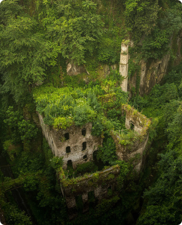

L’espoir à mon sens c’est comme un objectif de vie,
quelque chose pour lequel on veut se battre et espérer.
Moi je crois en un monde qui à l’avenir souffrira moins,
un monde ou à la nature reprend ses droits.

Un avenir et des actions écologiques
J’espère qu’à l’avenir nous serons plus écologiques,
c’est une démarche qui est en cours depuis longtemps mais
si tout le monde ne changeait qu’une petite habitude en la
rendant plus verte cela aurait quand même un impact même s'il est minime.
Par exemple quand on laisse couler l’eau pour qu’elle chauffe,
on la récupère dans une bassine pour arroser les plantes comme
ça l’eau que l’on n'a pas utilisée sert quand même à quelque chose
et on ne gaspille pas, bien sur chacun à sa façon d’agir pour l’environnement.
La technologie pourra t'elle nous aider
Nous sommes au courant que la nature va mal et que si l’on n'agit pas rapidement
les conséquences serait grave. Alors j’ai l’espoir qu’un jour notre technologie
aide à sauver l’environnement car pour l’instant oui on a évolué,
oui on a fait des progrès technologiques mais tous cela n’aide pas
à préserver la nature au contraire. Mais il n’y a pas que cela
qui compte c’est aussi à nous d’agir et de faire de notre mieux pour que ça s’améliore.
Reykjavik, la ville la plus écologique
La ville la plus écologique du monde est la capitale de l’Islande,
Reykjavik. Ils utilisent de l'énergie renouvelables pour toute
l’énergie qu’ils consomment, leurs transports en commun roule
à l’aide de l’hydrogène et leur source d’électricité est
l’hydro-électricité et la géothermie, ce qui fait que leur niveau
de vie est confortable. Mais si nous sommes au courant de leurs actions écologique,
je ne comprends pas pourquoi nous ne faisons pas encore pareil,
il existe un classement des villes les plus vertes, les plus écolos
alors pourquoi ne pas faire de même. Oui on s’améliore,
il y a eu des progrès et j'espère que cela va continuer
ainsi pour évoluer dans un monde meilleur mais aussi pour les prochaines générations.